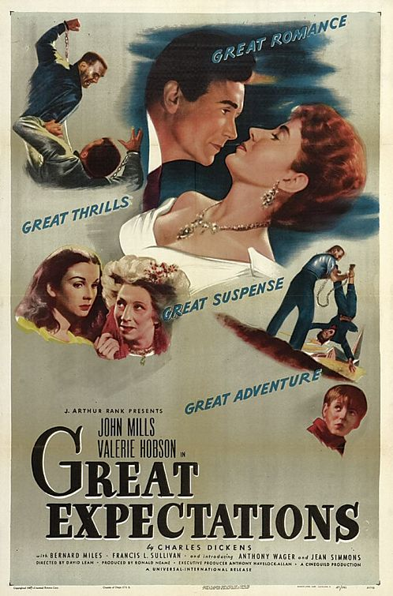

Great Expectations
20th Academy Awards
(Oscars 1948)
5 Nominations, 2 Awards
| Nominations | ||
|---|---|---|
| Category | Nominees | Result |
| Best Motion Picture | J. Arthur Rank-Cineguild | Nominated |
| Directing | David Lean | Nominated |
| Writing (Screenplay) | Anthony Havelock-Allan, David Lean, and Ronald Neame | Nominated |
| Cinematography (Black-and-White) | Guy Green | Won |
| Art Direction (Black-and-White) | John Bryan and Wilfred Shingleton | Won |